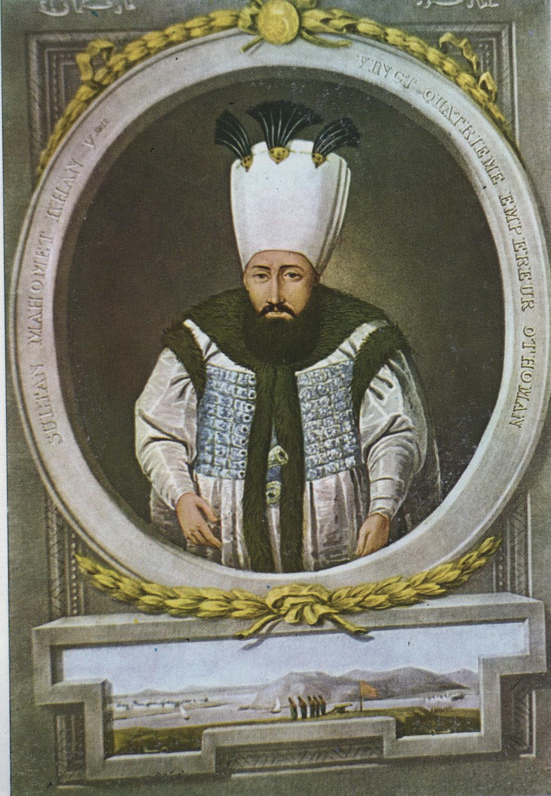

| önceki |  |
sonraki |
I. Mahmud, Osmanlı İmparatorluğu'nun yirmi dördüncü padişahıdır. Babası II. Mustafa, annesi Sâliha Sebkatî Sultan'dır. Patrona Halil İsyanı gibi çetin bir krizin ardından tahta geçmiş, zekası ve soğukkanlılığıyla asileri bertaraf ederek devlette sükûneti sağlamıştır. 24 yıl hüküm sürmüş, askeri ıslahatları ve Belgrad Zaferi ile 18. yüzyılın en başarılı padişahlarından biri olmuştur.
Saltanatı ve Büyük Başarıları
- Patrona Halil'in Tasfiyesi: Tahta çıktıktan sonra saray üzerinde baskı kurmaya çalışan Patrona Halil ve zorba yandaşlarını Topkapı Sarayı'nda tertiplediği gizli bir divan toplantısında tek tek etkisiz hale getirerek devlet otoritesini yeniden kurmuştur.
- İlk Batı Tarzı Askerî Islahatlar: Fransız subay Kont de Bonneval'i (Müslüman olarak Humbaracı Ahmed Paşa adını almıştır) görevlendirerek Humbaracı Ocağı'nı modernleştirmiş ve Osmanlı'nın ilk modern askeri teknik okulu olan Hendesehâne'yi açmıştır.
- Belgrad Antlaşması (1739): Hem Avusturya hem de Rusya ile aynı anda savaşan Osmanlı ordusu, her iki devleti de yenilgiye uğratmıştır. İmzalanan Belgrad Antlaşması ile Pasarofça'da kaybedilen stratejik Belgrad Kalesi geri alınmış; Karadeniz'in bir Türk gölü olduğu son kez uluslararası düzeyde tasdik edilmiştir. Bu antlaşma, Osmanlı'nın 18. yüzyılda imzaladığı son kazançlı ve şerefli antlaşmadır.
- İmar Faaliyetleri ve Taksim Suyu: İstanbul'un su ihtiyacını çözmek için Bahçeköy bentlerini ve bugün Taksim Meydanı'na adını veren tarihi Maksem'i inşa ettirmiştir. Nuruosmaniye Camii'nin inşasını başlatmış; Ayasofya, Fatih ve Süleymaniye camilerine zengin kütüphaneler ekletmiştir.
- Vefatı: 13 Aralık 1754'te Ayasofya'daki Cuma namazından saraya dönerken Demirkapı civarında at sırtında kalp krizinden vefat etmiştir.
Ailesi
- Eşleri:
- Hâce Alişen Kadın
- Ayşe Kadın
- Hatice Kadın
- Verdinaz Kadın
- Hâtem Kadın
- Raziye Kadın
- Çocukları:
I. Mahmud'un çocuğu olmamıştır. Tahta kardeşi III. Osman geçmiştir.
I. Mahmud hakkında daha fazla bilgi için buraya tıklayın.